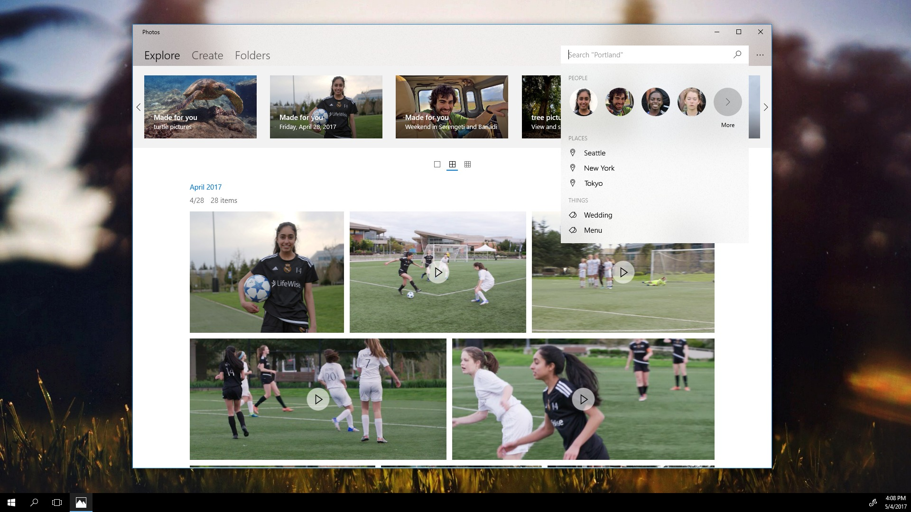

Summary
The Windows 10 Photos App has reached over 400 million people. I was contracted as a Product Designer to bring a refreshed vision of this app for Fall’s Creator update that included a video editor, 3D effects, and enhanced memory keeping functionality. To protect Microsoft's privacy, some parts of the design have been left out. This Case Study will focus on the theme system behind videos. I also designed the systems and UI/UX in the actually video editing screens (when a user adds filter, motion, text, etc to their video).
- Background
- Approach
- Research
- Mapping Opportunities
- Vision
- Production
- Reflection
Background

Photos is an in box app that is included with any installation of Windows 10. In previous lifetimes, it was known as Windows Photo Viewer and Windows Photo and Fax Viewer. It is an app of extreme utility, being one of the most used programs within the OS.
Recently, Microsoft has taken charge in putting creativity within reach of every person; the Photos app is a perfect canvas for this cause. Our team was tasked with updating the app to to provide better memory keeping while also providing some daring features that are new to most users: assisted storytelling via automatically generated movies, a video editor, and special effects.
I assisted in the design of many parts of the app but I was focused mainly on the editing features a user could encounter while interacting with their videos. Our aim for the editing functions align with the organization’s broader goals: make creation more approachable for everyone.
Everyone has a story to tell and it was my job to help them tell it.
Approach
My first task for the project was to create a suite of video themes that could be applied via automatic movies or manually in the editor. I approached this task with one thought in mind: reusability. This simple thought may seem easy enough, but when we're talking hundreds of millions of active users, it becomes a quagmire. How could we have a theme that potentially gets used a million times over yet doesn't get tired?
To be able to achieve our goal of reusability as well as make our suite of themes appealing we defined some characteristics of our feature that we wanted to explore. The first component of reusable themes was freshness; nobody wants to use titles and transitions that remind them of the 90s. The second component is relevance, users want a breadth of content to complement their story; we needed happy themes for happy stories, sad themes for sad ones, etc. The third component was respect; our themes needed to make our user's pictures and videos shine and make them feel like a superstar.
Research
The first step in research was to thumb through all the telemetry and studies done previously. We had a lot of great data from the existing Photos app and Windows Movie Maker. I wanted to learn about the behaviors, patterns, and needs people have when creating digital stories.
After I understood the basic user needs, it was time for me to actually learn about the process of film making. Before I hit YouTube and Vimeo to see what kinds of videos people were making, I wanted to know more about the origins of the styles in movies. I did a cinematic deep dive. I broadened my scope to world cinema and TV to create buckets of genres and styles. Within the buckets contained archetypal edits and their sources.
Feeling confident with my filmmaking and user knowledge, I decided to see what videos were being created and consumed in the present. Scouring through the most popular YouTube stars to the home movies with 10 views, I tried to take as much editing data from them as I could and tried to place them into the cinematic buckets to begin to map out what edits we would need for themes to cover as much ground as possible.
At this point I had a rough idea of what edits we should create and what kind of videos users wanted to make. With this assumption, I cross referenced some psychological research. I mapped out what emotions our themes covered on top of a simplified version of Plutchik's Chart of Emotions to check if we were hitting all four quadrants.
Mapping Opportunities
So we had our beginning list of themes and the edits we needed to create them. We knew at this point that we could satisfy the second component for reusability and we came up with two opportunities the satisfy the first and last.
- To ensure freshness, take inspiration from videos people are creating today. Also, leverage the power of Microsoft's technology to apply edits "smartly." We should be able to know if a user's video is a happy one, and if it is, then apply a #happy theme
- To be respectful and timeless, let's make all of the themes light handed. This is the user's story, not ours.
Vision
We had our initial set of themes agreed upon so we set out to begin the artistic process. Our process began like this:
- Create a razor statement for each theme that includes it's artistic style, purpose, and target audience
- Create a mood board based on inspiration from TV, movies, music, and photographs
- Iterate on this mood board until we have consensus
- Finalize a color palette and typeface
- Begin to create titles, captions, filters, etc based on above
- Add the assets that create this theme to the editor, test, and iterate
We also worked on how users interacted with themes. Yes users could always manually apply a theme like you would in a video editor like Windows Movie Maker, but we had the added complexity of automatically made movies from user's photo albums. We had to decide how those themes would automatically apply, which ones were most appropriate to be applied so often, if we would pre-populate title text, etc.
Production
With themes in the app, we began taking our designs to research. We would have users create videos, apply themes, and get their reaction on the changes. We also had them interact with UI I created to manually pick themes. We also invited the office to selfhost the themes and provide feedback.
We announced our product at Build 2016 and start rolling out in Fall the same year.
"Microsoft's Story Remix app is Windows Movie Maker on steroids"- The Verge
"Our work here runs off of grants. Marketing and targeting potential clients is the most important thing to us and we rely on the website to distribute this information. Often we work with people who have little access to the internet and know English as a second language so we need something that's easy to access and understand."
"Microsoft has once again opened the door into creative expression within Windows. "- PC World
"A transformational app for consumers fed up with their ever-growing libraries of digital media."- Engadget
We've continued our rollout of themes and update them and improve them as we go. We have a host of features in the Photos App to help bring the power of creativity to every user.
Reflection
Working on such a widely used app (400,000,000 users wow!) was absolutely terrifying but also delightful. I used this app my entire life and I can't believe I've gotten to work on it. I learned so many valuable lessons in inclusivity, accessibility, and how much work goes into shipping something so monumental. One of my favorite parts of working on this team is our great research team. I got to earn a lot of experience in many types of UR, an opportunity I never had on other projects due to their small size. I also learned so much about working cross-team and cross-discipline. We have a lot more exciting changes coming to the Photos App and I'm excited to see how we can empower users next.